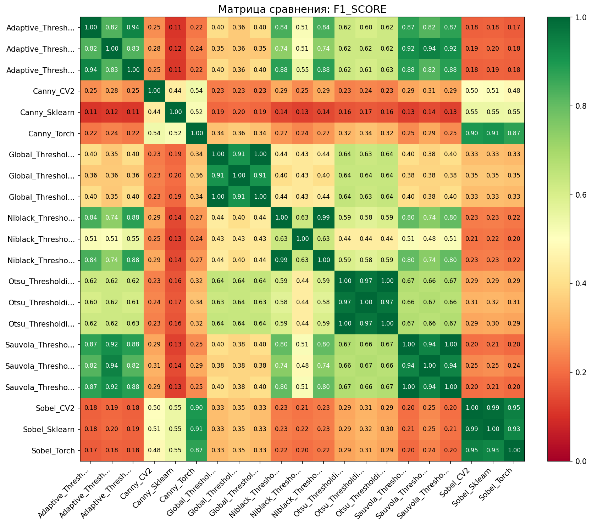
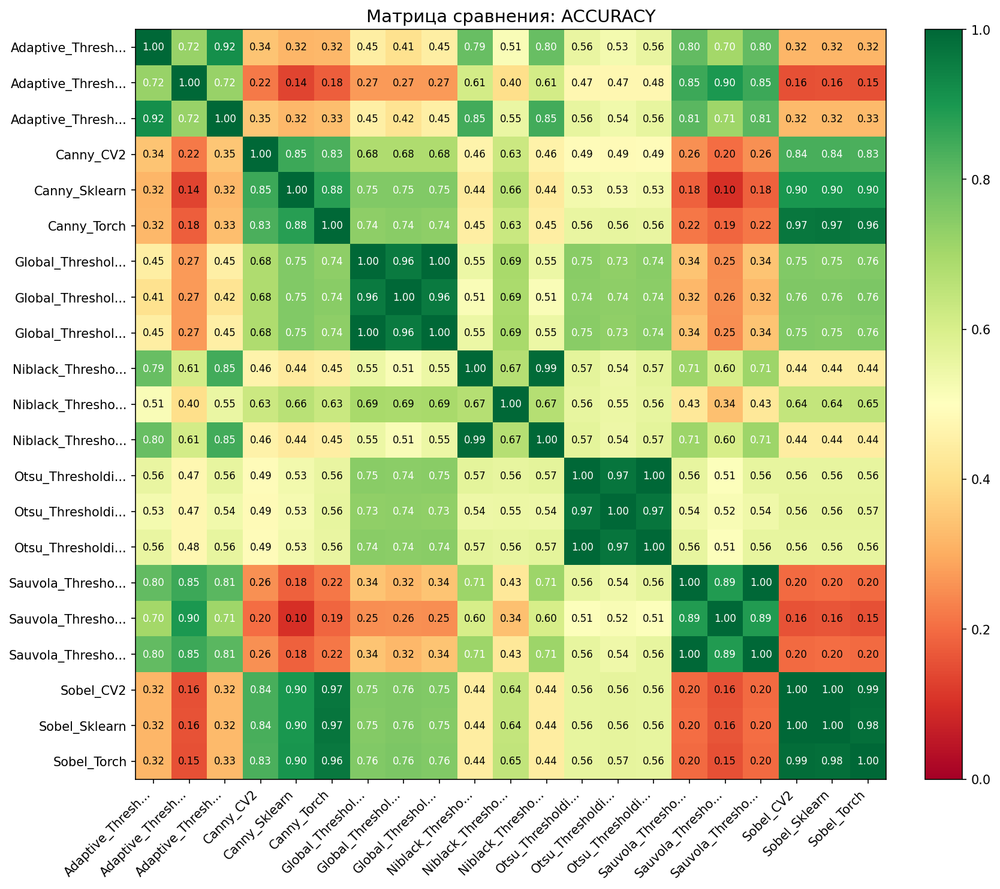
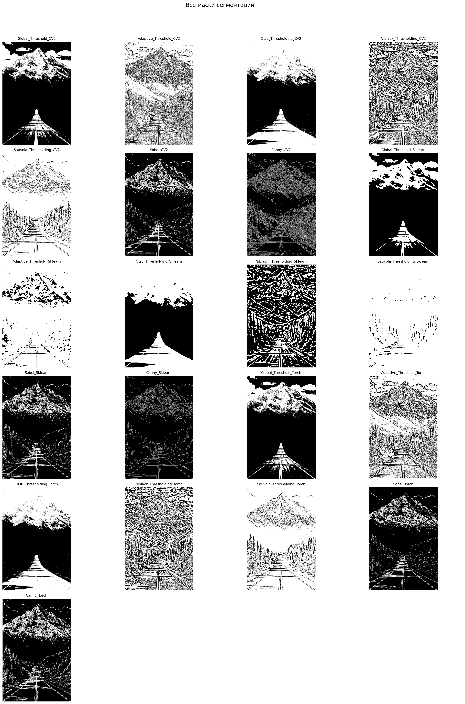

Дата: 2026-03-19 08:32:45
Всего методов: 21
Тип сравнения: all_vs_all
Референсный метод: Нет (все со всеми)



Сравнение всех со всеми
| Метод | Площадь маски | Покрытие | Время (с) |
|---|---|---|---|
| Sauvola_Thresholding_Sklearn | 791,191 | 97.4% | 0.077 |
| Adaptive_Threshold_Sklearn | 735,165 | 90.5% | 0.069 |
| Sauvola_Thresholding_Torch | 702,842 | 86.5% | 0.287 |
| Sauvola_Thresholding_CV2 | 702,804 | 86.5% | 0.004 |
| Adaptive_Threshold_CV2 | 561,323 | 69.1% | 0.002 |
| Adaptive_Threshold_Torch | 557,689 | 68.6% | 0.005 |
| Niblack_Thresholding_Torch | 470,883 | 58.0% | 0.284 |
| Niblack_Thresholding_CV2 | 470,685 | 57.9% | 0.004 |
| Otsu_Thresholding_Sklearn | 401,288 | 49.4% | 0.058 |
| Otsu_Thresholding_Torch | 391,950 | 48.2% | 0.005 |
| Otsu_Thresholding_CV2 | 390,862 | 48.1% | 0.001 |
| Niblack_Thresholding_Sklearn | 252,697 | 31.1% | 0.075 |
| Global_Threshold_Sklearn | 187,070 | 23.0% | 0.055 |
| Global_Threshold_CV2 | 184,263 | 22.7% | 0.001 |
| Global_Threshold_Torch | 184,263 | 22.7% | 0.007 |
| Canny_CV2 | 150,230 | 18.5% | 0.001 |
| Canny_Torch | 140,223 | 17.3% | 0.006 |
| Sobel_Sklearn | 117,014 | 14.4% | 0.013 |
| Sobel_CV2 | 114,196 | 14.1% | 0.006 |
| Sobel_Torch | 108,895 | 13.4% | 0.005 |
| Canny_Sklearn | 62,915 | 7.7% | 0.034 |